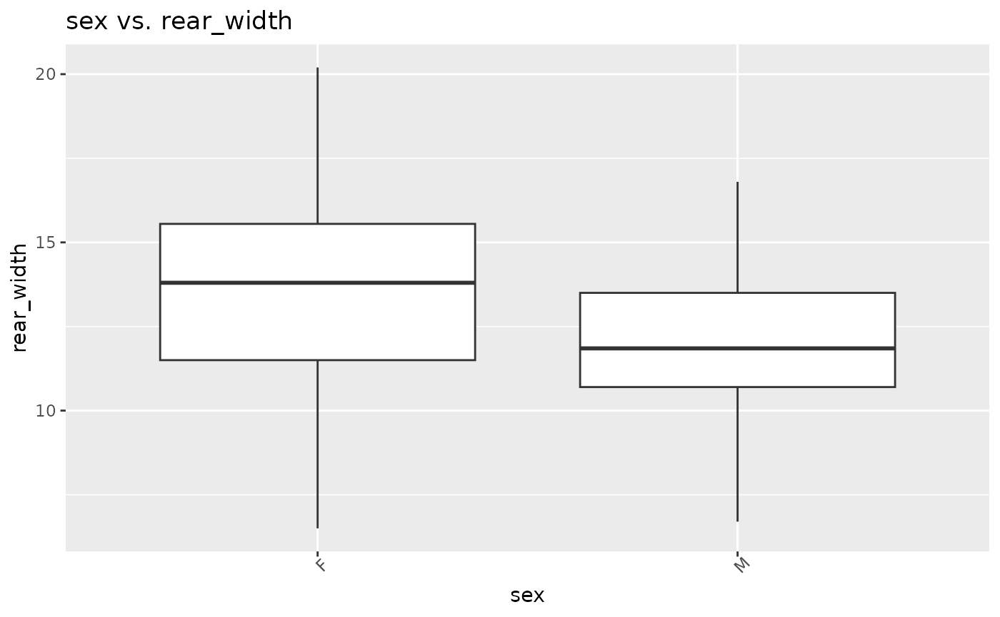
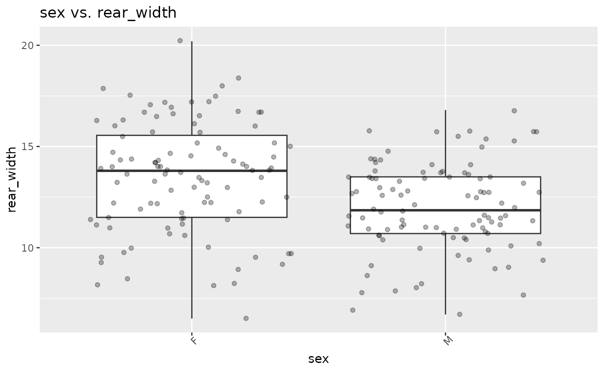
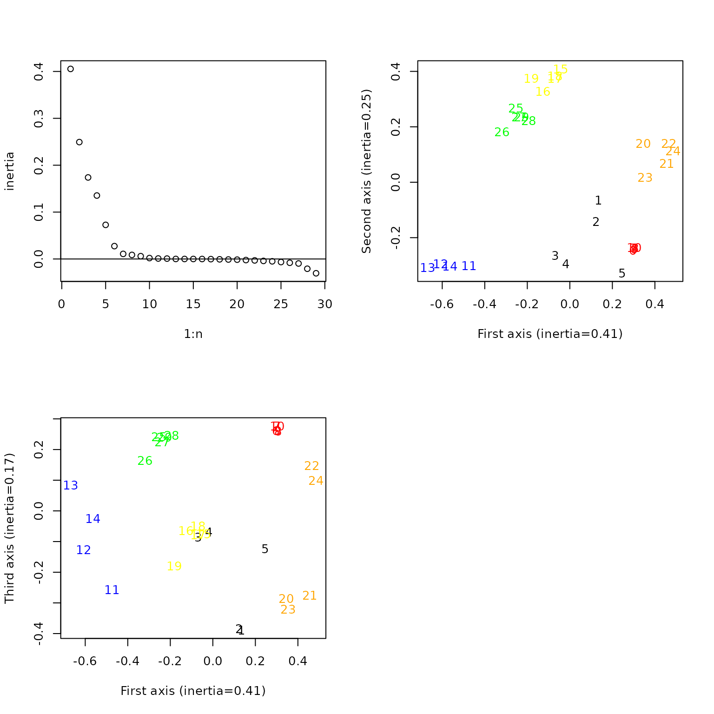

basicstats.Rmd
devtools::install_github("Hustler-1/Project_3")
#> Using GitHub PAT from the git credential store.
#> Downloading GitHub repo Hustler-1/Project_3@HEAD
#>
#> ── R CMD build ─────────────────────────────────────────────────────────────────
#> * checking for file ‘/tmp/Rtmp2trVgX/remotesdfd5e7f4022/Hustler-1-Project_3-980249d/DESCRIPTION’ ... OK
#> * preparing ‘basicstats’:
#> * checking DESCRIPTION meta-information ... OK
#> * checking for LF line-endings in source and make files and shell scripts
#> * checking for empty or unneeded directories
#> * looking to see if a ‘data/datalist’ file should be added
#> * building ‘basicstats_0.0.0.9000.tar.gz’
#> Warning: invalid uid value replaced by that for user 'nobody'
#> Installing package into '/tmp/RtmpRr3G5f/temp_libpath14b51f770a5'
#> (as 'lib' is unspecified)
library(basicstats)
library(tibble)
library(readr)
library(googlesheets4)
library(tidyverse)
#> ── Attaching core tidyverse packages ──────────────────────── tidyverse 2.0.0 ──
#> ✔ dplyr 1.1.4 ✔ purrr 1.0.2
#> ✔ forcats 1.0.0 ✔ stringr 1.5.1
#> ✔ ggplot2 3.5.1 ✔ tidyr 1.3.1
#> ✔ lubridate 1.9.3
#> ── Conflicts ────────────────────────────────────────── tidyverse_conflicts() ──
#> ✖ dplyr::filter() masks stats::filter()
#> ✖ dplyr::lag() masks stats::lag()
#> ℹ Use the conflicted package (<http://conflicted.r-lib.org/>) to force all conflicts to become errors
basicstats::maxr(path = "/cloud/project/data/crabs_test - crabs.csv", column = rear_width)#we can load in the data that we want to get a max for and then specify which data column we intend to get a max of.
#> Rows: 200 Columns: 7
#> ── Column specification ────────────────────────────────────────────────────────
#> Delimiter: ","
#> chr (2): color, sex
#> dbl (5): frontal_lobe, rear_width, carapace_length, carapace_width, body_depth
#>
#> ℹ Use `spec()` to retrieve the full column specification for this data.
#> ℹ Specify the column types or set `show_col_types = FALSE` to quiet this message.
#> [1] 20.2
basicstats::meanr(path = "/cloud/project/data/crabs_test - crabs.csv", column = rear_width)#we can use the same format with meanr to get a mean value for the same data column.
#> Rows: 200 Columns: 7
#> ── Column specification ────────────────────────────────────────────────────────
#> Delimiter: ","
#> chr (2): color, sex
#> dbl (5): frontal_lobe, rear_width, carapace_length, carapace_width, body_depth
#>
#> ℹ Use `spec()` to retrieve the full column specification for this data.
#> ℹ Specify the column types or set `show_col_types = FALSE` to quiet this message.
#> [1] 12.7385
surveys = read_csv("portal_data_joined.csv")
#> Rows: 34786 Columns: 13
#> ── Column specification ────────────────────────────────────────────────────────
#> Delimiter: ","
#> chr (6): species_id, sex, genus, species, taxa, plot_type
#> dbl (7): record_id, month, day, year, plot_id, hindfoot_length, weight
#>
#> ℹ Use `spec()` to retrieve the full column specification for this data.
#> ℹ Specify the column types or set `show_col_types = FALSE` to quiet this message.
view(surveys)#here we can see that we have a data set with many NA values.
surveys_clean = basicstats::cleanR(data = surveys, clean_names = FALSE)#we can quickly and cleanly remove those NA throughout the whole data set.
view(surveys_clean)
#But what if we have a data set in which the naming conventions are not efficient e.g. using spaces in column names?
gs4_deauth()
cam = read_sheet("https://docs.google.com/spreadsheets/d/1esrbC-QqoufjlDHXtIYtDcsXovC_x6o6Z4JfBPKvg3s/edit?usp=sharing")
#> ✔ Reading from FL_cameras.
#> ✔ Range FL_cameras.
view(cam)
cam_names = basicstats::cleanR(data = cam, clean_names = TRUE)# we can use the clean_names argument in cleanR to correct those issues.
#> Do you want to ajust data names, y or n?
view(cam_names)#now we have replaced those pesky spaces with nice periods!
#It is important to check the normality of your data when you plan on doing any statistical tests on data sets.
#You could run every test individually or you could use normalitycheckR to run the 3 most commonly used tests for normally distributed data.
#This function will run the Shapiro-Wilk test, Kolmogorov-Smirnov test and the Anderson-Darling test on any data you give it.
norm_test = rnorm(5000)#First lets make a test distribution using 5000 randomly generated data points.
basicstats::normalitycheckR(norm_test)#lets see what we get.
#> $shapiro
#>
#> Shapiro-Wilk normality test
#>
#> data: data
#> W = 0.99975, p-value = 0.8451
#>
#>
#> $kolmogorov
#>
#> Asymptotic two-sample Kolmogorov-Smirnov test
#>
#> data: data and mx_norm
#> D = 0.0112, p-value = 0.9124
#> alternative hypothesis: two-sided
#>
#>
#> $anderson
#>
#> Anderson-Darling test of goodness-of-fit
#> Null hypothesis: Normal distribution
#>
#> data: data
#> An = 0.39678, p-value = 0.8519
#We can see from the output that all of the three tests came back saying that the data is normally distributed which we expected.
crabs = read_csv("crabs_test - crabs.csv")
#> Rows: 200 Columns: 7
#> ── Column specification ────────────────────────────────────────────────────────
#> Delimiter: ","
#> chr (2): color, sex
#> dbl (5): frontal_lobe, rear_width, carapace_length, carapace_width, body_depth
#>
#> ℹ Use `spec()` to retrieve the full column specification for this data.
#> ℹ Specify the column types or set `show_col_types = FALSE` to quiet this message.
basicstats::normalitycheckR(crabs$rear_width)#Now lets try this with real data
#> [1] "data is non-normal"
#> $shapiro
#>
#> Shapiro-Wilk normality test
#>
#> data: data
#> W = 0.9951, p-value = 0.7646
#>
#>
#> $kolmogorov
#>
#> Asymptotic two-sample Kolmogorov-Smirnov test
#>
#> data: data and mx_norm
#> D = 0.2386, p-value = 6.19e-10
#> alternative hypothesis: two-sided
#Here we find that while the data was capable of passing the Shapiro-Wilk test it failed on the Kolmogorov-Smirnov test.
#this means that when compared to a normal distribution with the same mean the values in rear_width are significantly different.
#Another way to check for normality or to just represent data is to plot it. One of the most common ways is to generate a boxplot.
basicstats::boxR(data = crabs, x = sex, y = rear_width, title = "sex vs. rear_width", xname = "sex", yname = "rear_width", points = FALSE, savename = "test.png")#Here we can simply and easily generate a basic boxplot looking at how rear width in crabs compares to the sex. Just enter "n" when prompted in the console.
#> Do you want to save plot, y or n?
#> Not saving plot.
#This function allows you to specify all of you axis titles as well as the title of the whole plot when generating.
#It also allows for easy saving of the plot.
basicstats::boxR(data = crabs, x = sex, y = rear_width, title = "sex vs. rear_width", xname = "sex", yname = "rear_width", points = FALSE, savename = "test.png")#If you simply enter "y" when prompted you will notice that that the plot will have been saved in you main directory.
#> Do you want to save plot, y or n?
#> Not saving plot.
#Another thing you might want is to see where the actuall data points are on this plot.
basicstats::boxR(data = crabs, x = sex, y = rear_width, title = "sex vs. rear_width", xname = "sex", yname = "rear_width", points = TRUE, savename = "test.png")#We can do this by changing the points argument to TRUE and you can choose whether or not to save this one.
#> Do you want to save plot, y or n?
#> Not saving plot.
#Now lets say you've ran your tests, gotten some simple statistics, and plotted some of the data. What if you wanted to manipulate your whole data set?
test = basicstats::chunkR(data = cam_names, selection = c("Common.Name", "Count", "Subproject"), group = Common.Name, sum.name = "total")#Here we can use the cam_names data set we generated earlier to create a sub-chunk of the data set that gives use the counts of every animal spotted by the cams.
view(test)#Now we can see the total counts of all observed species by their common names
#It is important to note that the object in which you are grouping in the group argument can only be one thing. This function cannot handle grouping multiple things at this time.
library("hierfstat")
data(gtrunchier)#first we need to get the data from hierfstat.
basicstats::FstpaiR(data = gtrunchier, pcoa = FALSE)#If you have population genetic data you can use this function to get the Weir and Nei pairwise Fst values
#> $nei
#> 1 2 3 4 5 6
#> 1 NA 0.4746 0.4274 0.4459 0.3349 0.4129
#> 2 0.4746 NA 0.7577 0.7725 0.6095 0.7159
#> 3 0.4274 0.7577 NA 0.6236 0.5717 0.5317
#> 4 0.4459 0.7725 0.6236 NA 0.5202 0.4670
#> 5 0.3349 0.6095 0.5717 0.5202 NA 0.5130
#> 6 0.4129 0.7159 0.5317 0.4670 0.5130 NA
#>
#> $weir
#> 1 2 3 4 5 6
#> 1 NA 0.4695425 0.4194788 0.4486061 0.3356973 0.3992087
#> 2 0.4695425 NA 0.7795719 0.7648904 0.5994008 0.7563057
#> 3 0.4194788 0.7795719 NA 0.6321912 0.5688411 0.5308519
#> 4 0.4486061 0.7648904 0.6321912 NA 0.5199231 0.4776794
#> 5 0.3356973 0.5994008 0.5688411 0.5199231 NA 0.5065197
#> 6 0.3992087 0.7563057 0.5308519 0.4776794 0.5065197 NA
basicstats::FstpaiR(data = gtrunchier, pcoa = TRUE)#After getting those values you might want to plot that data to get a visualization of it. So we can use the pcoa argument to generate a pcoa plot of the data along with our raw pairwise values
#> $nei
#> 1 2 3 4 5 6
#> 1 NA 0.4746 0.4274 0.4459 0.3349 0.4129
#> 2 0.4746 NA 0.7577 0.7725 0.6095 0.7159
#> 3 0.4274 0.7577 NA 0.6236 0.5717 0.5317
#> 4 0.4459 0.7725 0.6236 NA 0.5202 0.4670
#> 5 0.3349 0.6095 0.5717 0.5202 NA 0.5130
#> 6 0.4129 0.7159 0.5317 0.4670 0.5130 NA
#>
#> $weir
#> 1 2 3 4 5 6
#> 1 NA 0.4695425 0.4194788 0.4486061 0.3356973 0.3992087
#> 2 0.4695425 NA 0.7795719 0.7648904 0.5994008 0.7563057
#> 3 0.4194788 0.7795719 NA 0.6321912 0.5688411 0.5308519
#> 4 0.4486061 0.7648904 0.6321912 NA 0.5199231 0.4776794
#> 5 0.3356973 0.5994008 0.5688411 0.5199231 NA 0.5065197
#> 6 0.3992087 0.7563057 0.5308519 0.4776794 0.5065197 NA
#Along with your pairwise values you might want to run a PCA analysis on the same data.
basicstats::PCAplotR(data = iris, loadings = FALSE, clusters = FALSE)#We can use PCAplotR to quickly generate a PCA plot of the data. But what if we want the loading values to appear on the plot?
basicstats::PCAplotR(data = iris, loadings = TRUE, clusters = FALSE)#Using the loadings argument we can add the loading values as well as their directions to the plot. But what about clusters?
basicstats::PCAplotR(data = iris, loadings = FALSE, clusters = TRUE)#Using the clusters argument we can add colored clusters to the plot around the data points
#It is important to note that for this function you cannot have both loadings and clusters.